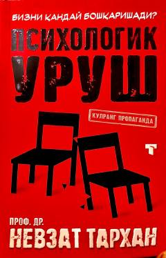

PUZamonaviy axborot urushlari va psixologik manipulyatsiyalar sir-asrorlari haqida kitob.
Ushbu kitobda zamonaviy dunyoda qo'llaniladigan психологик уруш usullari, uning strategik va taktik maqsadlari batafsil bayon etilgan. Shuningdek, targ'ibot, miya yuvish va axborot xurujlariga qarshi kurashish yo'llari ilmiy-amaliy asosda ochib berilgan. Professor Nevzat Tarhan qalamiga mansub mazkur asar o'quvchilarni axborot xavfsizligi va manipulyatsiyalardan himoyalanishga o'rgatadi.